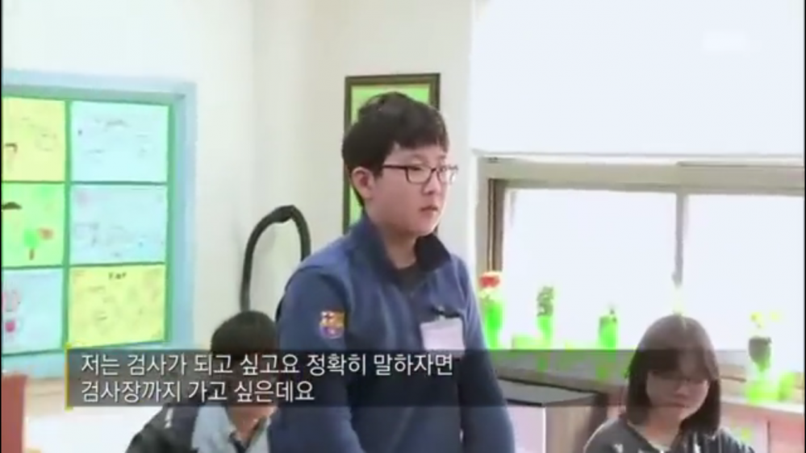

좋아하는 일과 멋져 보이는 일

좋아하는 일과 멋져 보이는 일이 있다. 둘은 얼핏 보기에 비슷해 헷갈리기 쉽다. 그래서 우리는 멋져 보이는 일을 좋아하는 일로 착각하곤 한다. 그러나 좋아하는 일과 멋져 보이는 일은 분명 다르다. 좋아하는 일은 멋져 보이기 마련이지만, 멋져 보인다고 해서 당신이 그 일을 즐기리란 보장은 없기 때문이다.
좋아하는 일은 확실하다. 행복한 웃음, 마구 뛰는 가슴이 증명한다. 가슴 뛰는 일을 좇는 사람은 목적과 수단이 일치한다. 무엇을 합니까? — 즐거운 일을 합니다. 왜 합니까? — 즐겁기 때문입니다. 목적과 수단이 일치하는 일은 놀이다. 놀이는 일보다 즐겁다. 즐거운 사람은 행복한 삶을 살 가능성이 크다.
반면 멋져 보이는 일 — 흔히들 좋아하는 일로 착각하는 바로 그것 — 은 불확실하다. 동경은 신기루를 빚는다. 그래서 멀리서 상상하던 모습과 다르다. 멋짐을 좇는 사람들의 목적과 수단이 일치하지 않는 경우가 많은 이유다. 무엇을 합니까? — 멀찍이 볼 땐 멋졌지만, 실제론 멋지지 않은 일을 합니다. 왜 합니까? — 멋져 보이기 위해 일합니다. 목적과 수단이 일치하지 않는 일은 노동이다. 노동은 즐겁지 않다. 즐겁지 않으면 행복한 삶을 살기 어렵다.
나는 누군가에게 훈수 둘 만큼 빼곡한 삶을 살지 않았다. 먹고 살만한 중산층 집에서 자랐다. 현실의 무게에 짓눌려 본 적 없다. 그러나 저마다의 현실이 무겁다는 사실을 안다. 냉혹한 현실은 꿈과 흥미를 집어 삼킨다. 그래서 좋아하는 일을 좇으란 건방진 말은 하고 싶지 않다. 다만 이 글을 읽은 이들이 선택의 갈림길에 섰을 때, 좋아하는 일과 멋져 보이는 일을 헷갈리지 않길 바란다. 우리 인생은 확실히 즐거운 일을 좇기에도 짧기 때문이다.